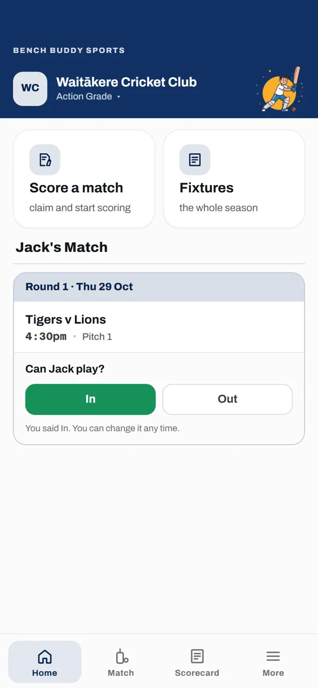
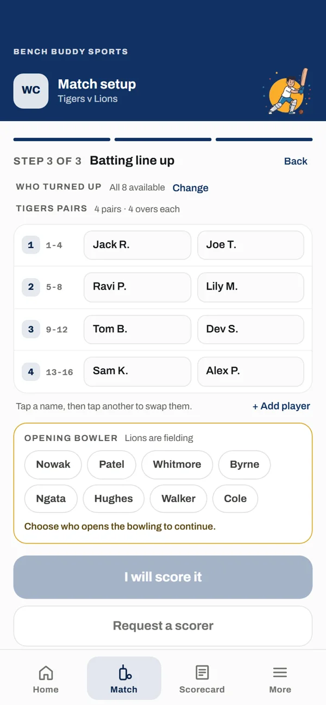
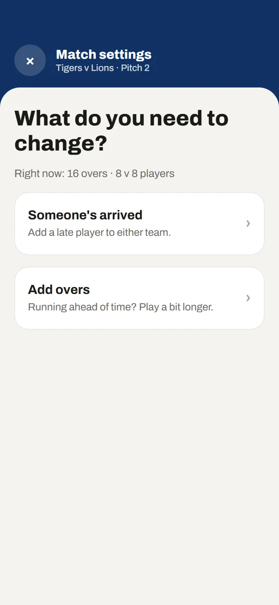
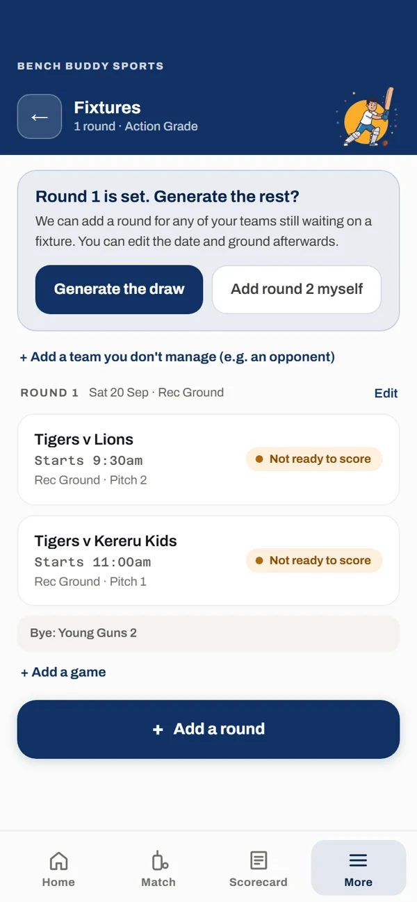
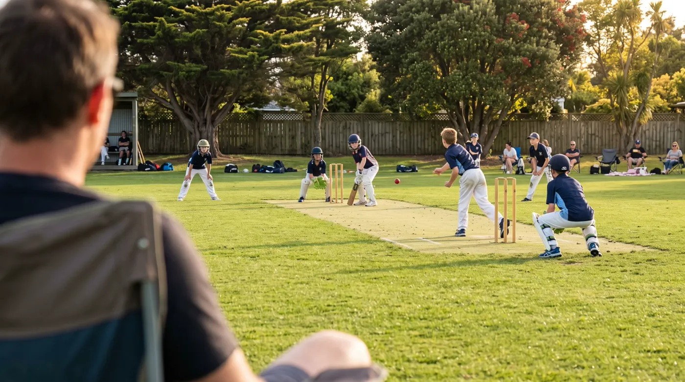

Parents
Reply to availability in one tap
Open the link your coach shared, pick your child and see every fixture in one place.
Your club organises the season’s fixtures. Coaches manage teams and player availability. On match day, changes are easy to manage, scoring is simple to follow, and every player gets a fair opportunity to play.


Each ball is one tap on one screen. Pairs, overs and who is on strike are tracked, so a parent can pick it up mid-game without knowing the scoring rules.
Pick the one you'd be doing: parent, coach or club admin.

Open the link your coach shared, pick your child and see every fixture in one place.

Pick the fixture, check who is here today and set the batting order.

The batting order and overs update for both teams.

Create competitions with their own rules, add squads and load fixtures for every team.
Your competitions, scoring rules and squads, loaded before your first fixture.
What your volunteers find on Saturday decides what we build next.
You talk to the coach who built it, not a support queue.
Anyone your coach hands the match to. They sign in with an emailed link, then each ball is one tap, and pairs, overs and strike are tracked, so a parent can pick it up mid-game.
Through the link their coach shares. They pick their child, reply to availability and see every fixture.
If your competition plays pairs cricket, yes. Your club sets the rules once (wides, no balls, wicket penalties, balls per over), each competition has its own, and we load them with you before your first fixture.
Send the form below. We set up your competitions, scoring rules and squads with you before your first fixture.

Scoring tools tend to be built for the people who run the competition. Bench Buddy is built for the parent who gets handed the phone at 9:25 on Saturday morning. Made by a volunteer coach, it is meant to make sense the first time they open it.
Tell us a bit about your club. We'll be in touch soon to set up your first competition with you.
We'll be in touch soon to set up your first competition with you.